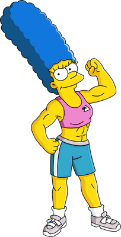

Marge é a esposa de Homer Simpson e mãe de Lisa, Bart e Maggie Simpson na série animada Os Simpsons.[1] Ela é mais conhecida por causa de seus longos cabelos azuis, cujo penteado foi inspirado no filme A Noiva de Frankenstein[2] e sua personalidade muito paciente. Mesmo Homer aprontando inúmeras confusões, ela continua sendo uma esposa fiel e dedicada, assim como é para com os filhos.
Apesar da aparente imagem de esposa padrão americana, Marge se sente por vezes muito solitária e frustrada, principalmente porque ela tem dificuldades em fazer novas amizades e quando consegue alguma amiga, Homer põe tudo a perder com seu modo desajeitado de ser.